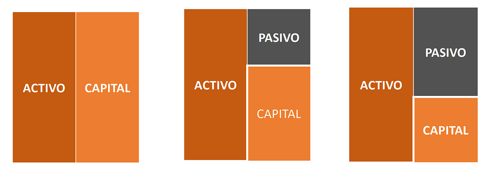

Contabilidad

Contabilidad

Durante el periodo comprendido de marzo a abril del año 2023, se estudiaron los temas contenidos en los módulos 4 y 5, que contienen al segundo parcial. Esta segunda porción del semestre está dividida en varias semanas, en las que se impartieron conocimientos como la cuenta contable, los cargos, los abonos, los movimientos, las partidas de diario y los traslados al Mayor.
Durante la duración del curso se realizan pruebas parciales, tres para ser exactos. Estos parciales se realizan cada dos meses y están fundamentados en módulos, que son impartidos en dos o tres semanas cada uno. Es por ello que el portafolio correspondiente al curso está dividido por parciales.
Agrupación secuencial y numérica de los bienes, derechos y obligaciones que poseen los negocios o empresas. La cuenta contable representa a los elementos patrimoniales agrupados por clases, expresando los aumentos y disminuciones de valor que experimentan en un período determinado. Gráficamente se representa en forma de “T”, como un estado dividido en dos partes denominadas debe y haber con un título adecuado a la especie o clase de valores cuya situación y movimiento se registra y expresa. Sirve en general para representar cualquier cuenta.
Cuando se anota una cantidad en el DEBE, se dice que se está anotando un cargo o débito. Significa registrar en el DEBE, es decir en la parte izquierda de la cuenta.
Cuando se anota una cantidad en el HABER, se dice que estamos haciendo un abono o crédito. Significa registrar en el Haber, es decir en la parte derecha de la cuenta.
Es la suma de los cargos y la suma de los abonos. Dependiendo de
su naturaleza pueden ser: movimientos deudores y movimientos
acreedores.
Movimiento deudor: Es la suma de los cargos de una cuenta (debe).
Movimiento acreedor: Se llama así a la suma de los abonos de una cuenta (haber).

Se llama saldo a la diferencia entre movimiento deudor y acreedor. En virtud de que existen dos clases de movimientos, y que la diferencia puede ser mayor en uno y otro caso; puede también haber dos clases de saldos: saldo deudor y saldo acreedor.
El sistema de partida doble es el método o sistema de registro de las operaciones, usado en la contabilidad, se puede decir que es la base de la contabilidad. La partida doble se sustenta por medio del sistema de cargo y abono.
Representa la relación entre ACTIVOS, PASIVOS Y CAPITAL CONTABLE. De un lado están los activos totales y del otro las fuentes de financiamiento y los derechos legales y económicos sobre los activos (pasivo y capital contable).
Cuando la empresa alcanza cierto grado de desarrollo, es indispensable que el listado de cuentas del catálogo se clasifique de acuerdo con la naturaleza o tipo de movimiento que se le dará. Dentro de la clasificación de cuentas se tienen las cuentas de balance y las cuentas de resultados.
El capital contable agrupa elementos que se muestran en la ecuación y son: el capital social que representa la aportación de los accionistas y las utilidades retenidas, que representan las utilidades generadas por el negocio y reinvertidas en éste. Las utilidades retenidas están integradas por las utilidades de períodos anteriores no repartidas y las utilidades del período actual, disminuidas por los dividendos (utilidades repartidas a los accionistas).

| Cuenta | Descripción | Grupo | Representa |
|---|---|---|---|
| Caja | Registra el dinero en efectivo y depositado en bancos | Activos | Bienes y derechos |
| Cuentas por Cobrar | Deudas a favor con clientes | Activo | Bienes y derechos |
| Deudores | Préstamos a empleados y personas diversas | Activo | Bienes y derechos |
| Edificios | Edificaciones permanentes | Activo | Bienes |
| Vehículos | Equipos de transporte | Activo | Bienes |
| Gastos de constitución | Gastos que se realizan para constituir la empresa | Activo | Pagos anticipados - Derechos |
| Cuenta | Descripción | Grupo | Representa |
|---|---|---|---|
| Proveedores | Pagos pendientes por concepto de compras al crédito | Pasivo | Obligación |
| Acreedores | Cuentas por pagar con diversas entidades no bancarias o personas | Pasivo | Obligación |
| Préstamos bancarios | Préstamos con los bancos del sistema | Pasivo | Obligación |
| Hipotecas (Acreedores hipotecarios) | Préstamos en los que dejamos una garantía inmobiliaria | Pasivo | Obligación |
| Servicios cobrados por anticipado | Anticipos que recibimos por servicios no prestados | Pasivo | Obligación de prestar el servicio |
| Depreciación acumulada | Reserva técnica que se guarda para registrar la depreciación | Reguladora del activo | Reservas |
| Capital | Inversión del propietario o propietarios | Capital | Diferencia entre activo y pasivo |
| Cuenta | Descripción | Grupo | Representa |
|---|---|---|---|
| Ventas | Ingresos registrados por venta de mercaderías o servicios | Ganancia (Ingreso) | Ingresos por ventas realizadas |
| Otros ingresos | Ingresos registrados que no son del objeto principal de la empresa | Ganancia (Ingreso) | Alquileres u otros similares |
| Intereses ganados | Intereses ya sea por inversiones en bancos o intereses cobrados a clientes por atrasos | Ganancia (Ingreso) | Ingresos por inversiones o por mora a clientes |
| Descuentos percibidos | Descuentos que recibimos por pronto pago | Ganancia (Reducción de costo) | Descuentos por haber pagado antes de lo convenido |
| Cuenta | Descripción | Grupo | Representa |
|---|---|---|---|
| Alquileres pagados | Pagos por alquileres ya vencidos | Gasto (Pérdida) | Alquiler vencido que ya se disfrutó |
| Sueldos de personal | Sueldos pagados al personal que labora en la empresa | Gasto (Pérdida) | Pago de nómina |
| Prestaciones laborales | Aguinaldo, Bono 14, Vacaciones, Indemnización | Gasto (Pérdida) | Cálculo mensual que se provisiona para el pago oportuno |
| Descuentos otorgados | Descuentos que otorgamos por pronto pago | Gasto (Pérdida) | Descuentos por haber cobrado antes de lo convenido |
| Depreciaciones | Cargo de pérdida de valor de los activos | Gasto (Pérdida) | Depreciación fiscal |
| Gastos generales | Pagos por luz eléctrica, agua, teléfono | Gasto (Pérdida) | Pagos efectuados que no se recuperarán |